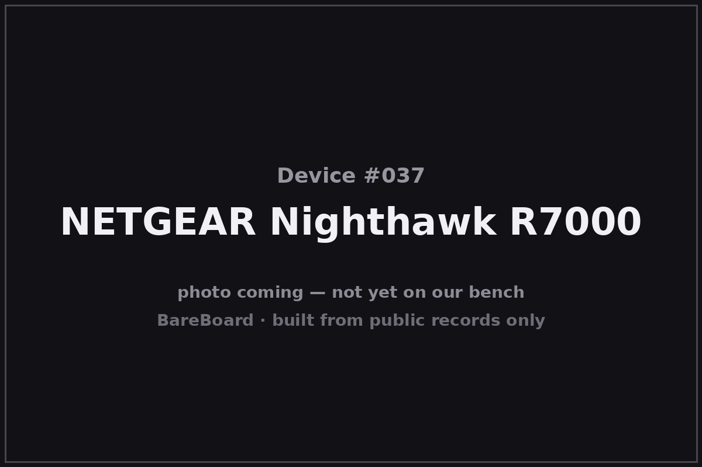

The Autopsy Report · Device #037
The NETGEAR Nighthawk R7000
The stealth-bomber router — three antennas, a 1 GHz dual-core heart, and a second life in half the open-source firmware projects on earth.
What is this thing?
The NETGEAR Nighthawk R7000 is a dual-band 802.11ac (“Wi-Fi 5”) router rated AC1900 — 600 Mbps on 2.4 GHz plus 1300 Mbps on 5 GHz, 3×3 MIMO — with a 1 GHz dual-core Broadcom SoC, five gigabit Ethernet ports, and two USB ports (one USB 3.0). It launched in late 2013 as the flagship of the Nighthawk line, and its angular black shell became one of the most recognizable router designs ever made. PCWorld review KitGuru review
It's also a third-party firmware legend: the R7000 runs DD-WRT, Tomato, and OpenWrt builds, and its longevity in the community rivals the WRT54G's. This report covers the R7000 under FCC ID PY313200233 — an authorization it shares with the R6700 and the R6900v1, per the public record. FCC test report (mirror)
Not on our bench (yet)
This device is not on our bench. We have never owned, opened, photographed, measured, or powered on the Nighthawk R7000. Everything in this report comes from public records: government filings, manufacturer documents, manuals, and credible public teardowns and hardware databases. Where a fact would require holding the hardware in our hands — our own photos, our measurements, our boot logs, the exact board revision of a future unit — we say so, out loud, and mark it unknown. Nothing here is presented as first-hand BareBoard evidence.
That constraint is also the point: you can learn a remarkable amount about a device without ever touching it, because the public record is deep. What follows is everything the record could tell us — and an honest map of where the record runs out.
A short history
- 2013-11NETGEAR launches the Nighthawk R7000 — AC1900, 1 GHz dual-core, the angular “stealth” design — into a market about to be reshaped by 802.11ac. PCWorld review
- 2013–2014Reviews praise its LAN throughput; the community discovers the R7000 is a superb third-party firmware host — DD-WRT, Tomato, and eventually OpenWrt all target it. PCWorld review
- 2016A public “how to unbrick the Nighthawk R7000” thread documents the router's TFTP recovery mode — the manufacturer-adjacent escape hatch for bad flashes — in enough detail to prove the mode's existence in the public record. NETGEAR community
- 2018A Class II-change test report for the R7000 is filed under PY313200233 — 3TX/3RX, 12 V/3.5 A adapter — keeping the authorization current years after launch. FCC test report (mirror)
The outside
The R7000 looks like nothing else on the shelf: a faceted black wedge with three tall external antennas, front LEDs for power, internet, 2.4 GHz, 5 GHz, USB, and LAN, and a rear panel with four gigabit LAN ports, one gigabit WAN, USB 3.0 + USB 2.0, power, a power switch, and the reset button. PCWorld review

The design language — sharp angles, matte black, oversized antennas — became the Nighthawk brand identity for a decade of successors.
The board
One board built around Broadcom's BCM4709A0 — a 1 GHz dual-core ARM Cortex-A9 SoC — with Samsung NAND flash for firmware and Samsung DDR3 for working memory, and the 2.4/5 GHz radio chains built from Broadcom radios plus Skyworks SE2623L front-end modules. The public record describes 3-transmit/3-receive (3T3R) operation. FCC test report (mirror) KitGuru review
Public third-party discussion documents a serial console used for unbricking, consistent with the board carrying an accessible UART header — third-party evidence only, no verified pinout. NETGEAR community
Under the microscope: the chips
What's on the R7000 board, per the equipment-authorization exhibits and corroborating public records. Confirmed means a primary source — the FCC exhibits or the manufacturer record.
| Chip | What it does | How we know | Dig deeper |
|---|---|---|---|
| Broadcom BCM4709A0 | The main SoC — 1 GHz dual-core ARM Cortex-A9 running the router, USB, and Ethernet. | Confirmed Named in the FCC filing's public exhibits for PY313200233. | FCC test report (mirror) |
| Samsung K9F1G08U0D 1 Gb NAND | The flash chip holding the firmware (128 MB). | Confirmed Named in the FCC filing's public exhibits for PY313200233. | FCC test report (mirror) |
| Samsung K4B2G1646E-BCK0 2 Gb DDR3 | Working memory for the SoC (256 MB). | Confirmed Named in the FCC filing's public exhibits for PY313200233. | FCC test report (mirror) |
| Skyworks SE2623L | A 2.4 GHz RF front-end module in the wireless chain. | Likely Named in public hardware records for this model; exact placement not verified from a primary source. | FCC test report (mirror) |
The 5 GHz front-end parts and exact radio-chain part numbers are not verified from the public exhibits we could access. No public datasheets were located for the Broadcom SoC.
The government's file on this box
The government's file on this router is public under FCC ID PY313200233 — an authorization the R7000 shares with the R6700 and the R6900v1, per the public record. FCC test report (mirror)
- What we read: a 2018 Class II-change test report for the R7000 under this ID — 3TX/3RX operation, powered by a 12 V / 3.5 A adapter. Its lab figures: about 772 mW conducted at 2.4 GHz (CDD), 279 mW at 5.18–5.24 GHz (CDD), and 923 mW at 5.745–5.825 GHz (CDD), with separate beamforming figures in the report.
- Caveat: this is a Class II-change report, not necessarily the original grant — each number belongs to its own filing, and we don't blend them.
Read the report yourself: test report (mirror)
Service, recovery, and debug modes
We listen, we don't knock: this section documents only that service or recovery modes exist in the public record, and what kind of thing they are — never how to defeat a lock.
Public third-party discussion documents a TFTP recovery mode on the R7000 — a bootloader-level state that accepts a firmware image over the network, used to recover from bad flashes. NETGEAR community Existence only: we describe that the mode exists in the public record, not a procedure.
The same public discussion references serial-console unbricking, implying an accessible UART header on the board. Third-party evidence only; location, pinout, and settings unverified.
What the public record shows
The design is the product. Technically the R7000 is one of several Broadcom AC1900 routers — but the Nighthawk shell made it iconic, and iconography sells. The public record (launch reviews to a decade of successors) shows industrial design doing real market work.
Community support is a second warranty. The R7000's third-party firmware scene — DD-WRT, Tomato, OpenWrt — kept these units useful and patched long past typical support windows. A router the community adopts is a router that refuses to become e-waste on schedule.
Shared authorizations need reading carefully. One FCC ID covering the R7000, R6700, and R6900v1 means the filing's exhibits span related-but-different hardware — another case where “the filing says” needs a model name attached.
What we didn't do
- We never had a unit, so we took no photographs and no measurements.
- We never opened an enclosure or lifted an RF shield.
- We never captured a boot log or probed a debug port.
- We never extracted, modified, redistributed, or ran the device's firmware.
- We never defeated a lock, bypassed authentication, or recovered credentials or keys — and we publish none.
- We never tested an exploit or a vulnerability against any device.
- Anything below marked Unknown stays unknown until a unit reaches our bench.
By the numbers
- Device: NETGEAR Nighthawk R7000 (AC1900)
- Era: 2013–present
- FCC ID: PY313200233 (shared with R6700, R6900v1 per the public record)
- Wireless: AC1900 — 600 Mbps @ 2.4 GHz + 1300 Mbps @ 5 GHz, 3×3 MIMO
- Conducted power (2018 report, CDD): ~772 mW @ 2.4 GHz; ~279 mW @ 5.18–5.24 GHz; ~923 mW @ 5.745–5.825 GHz
- Main chip: Broadcom BCM4709A0, 1 GHz dual-core ARM Cortex-A9
- Memory: 256 MB RAM; 128 MB flash
- Ports: 4× gigabit LAN, 1× gigabit WAN, USB 3.0 + USB 2.0
- Power: 12 V / 3.5 A adapter
Words to know
Every term this page uses, in plain English. No prior knowledge required.
- AC1900
- A speed class: up to ~600 Mbps on 2.4 GHz plus ~1300 Mbps on 5 GHz, added together for marketing. Real-world speeds are lower.
- MIMO
- Multiple-input, multiple-output: using several antennas and radio chains at once to move more data. 3×3 means three streams each way.
- CDD / beamforming
- Two ways of using multiple antennas: cyclic-delay diversity (CDD) spreads the signal for robustness; beamforming focuses it toward the client.
- TFTP recovery
- A bootloader mode that pulls a firmware image over the local network — a last resort when the normal software won't boot.
- UART / serial console
- A simple port that lets you watch a device narrate its own startup, line by line.
- Class II change
- An FCC filing for a modification to an already-authorized device — new report, same ID.
- FCC ID
- The ID the FCC assigns to each approved wireless product. Punch it into fccid.io and the whole public filing comes up.
Sources & confidence
- FCC test report (2018, Class II change) under PY313200233 — 3TX/3RX, 12 V/3.5 A adapter, conducted powers ~772/~279/~923 mW (CDD) plus beamforming figures: read via a public mirror of the FCC document. High confidence; each figure tied to its report.
- Chip identities (BCM4709A0, Samsung NAND/DDR3): the authorization's public exhibits. High confidence. Skyworks SE2623L: public hardware records, medium confidence.
- Launch, design, and performance context: PCWorld and KitGuru contemporary reviews. High confidence in attribution.
- TFTP recovery mode and serial-console unbricking: NETGEAR community thread. Medium confidence; existence only, no procedure reproduced.
- R6700/R6900v1 sharing the authorization: the public record. Medium-high confidence.
Anything not listed here is unknown until the bench says otherwise. We'll say so, out loud, when that's the case.
Legal note. BareBoard is an educational project. This page is built entirely from public records — government filings, manufacturer documents, and published third-party research — about hardware we have never possessed. We don't publish, host, or distribute firmware, keys, passwords, or credentials, and nothing here is instructions for defeating a lock or an authentication check. Product names and trademarks belong to their respective owners and appear here only to identify the hardware. If you believe anything here infringes your rights, contact us and we'll address it promptly.